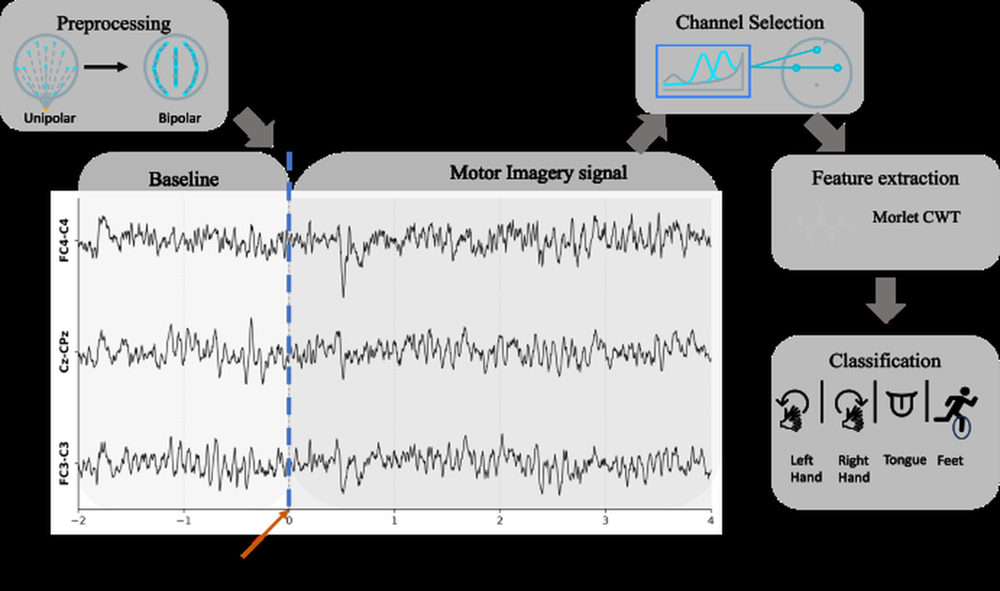
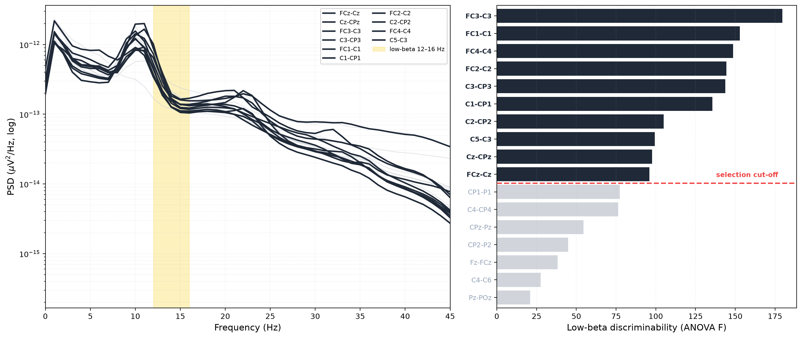
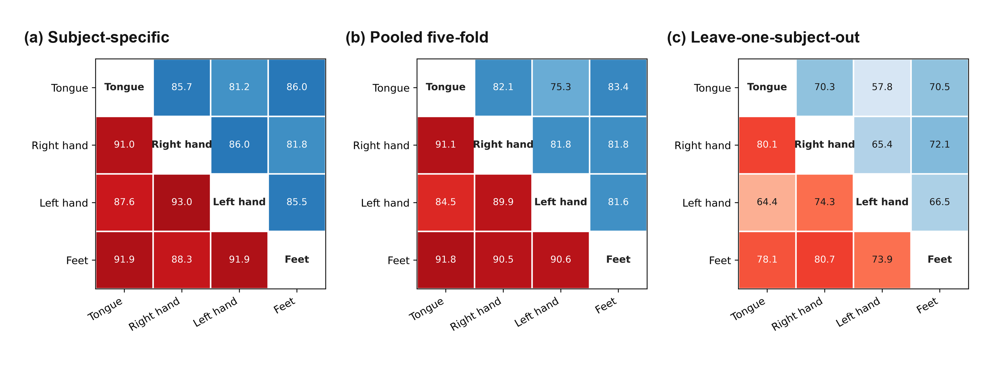
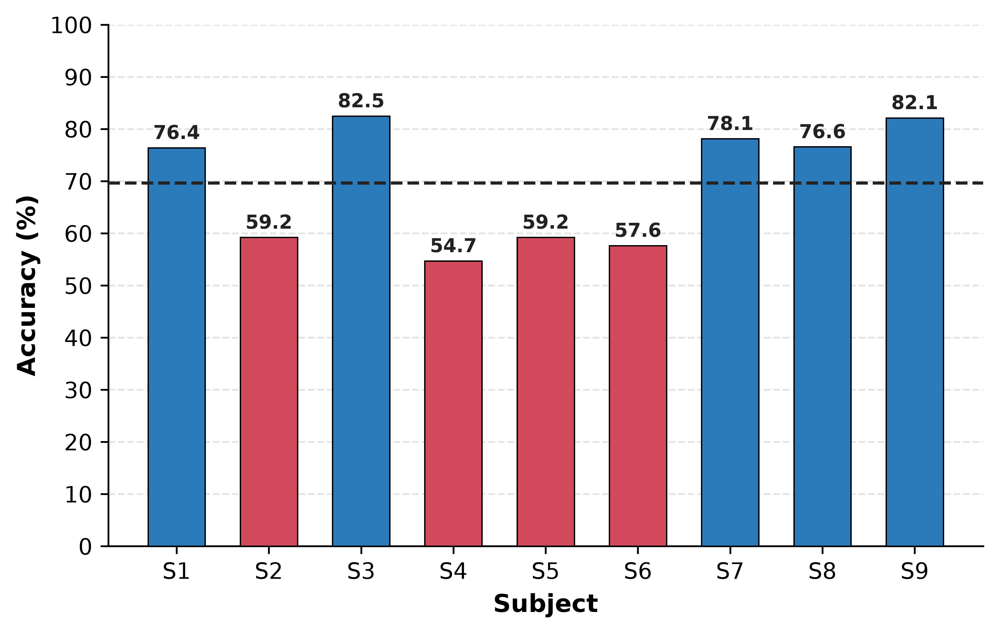
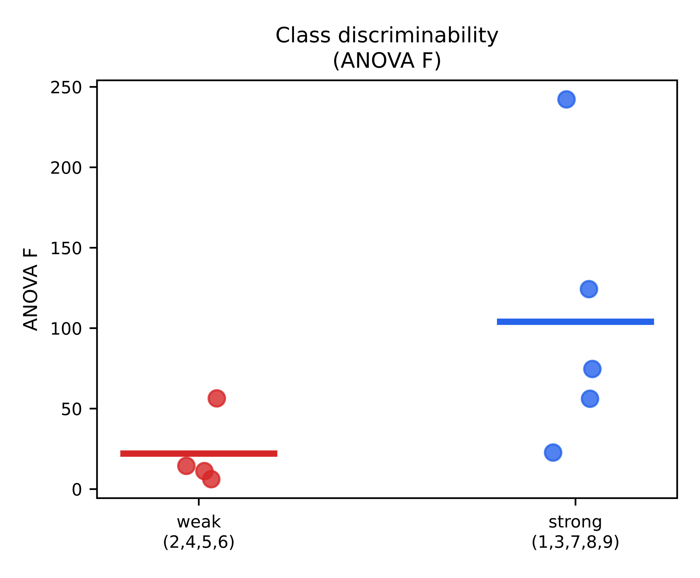

Motor imagery is among the most widely studied paradigms for assistive and rehabilitative brain–computer interfaces — but compact features and fewer electrodes make systems far easier to deploy. This study asks how much of a handcrafted wavelet feature's performance survives when the dimensionality is cut. Morlet continuous-wavelet features across seven frequency bands were computed from the BCI Competition IV 2a dataset and classified with XGBoost. Ten of seventeen bipolar channels were selected by power spectral density, shrinking the feature vector by 41% (2,737 → 1,610 values). Subject-specific training performed best at 69.6% accuracy and 0.887 AUROC — while cross-subject transfer collapsed, showing the features carry task information but transfer poorly between people.
Read the full six-page manuscript inline, or download it for later.
The five figures from the manuscript — click any to view it full-size.

The pipeline of the motor-imagery decoding study. Preprocessing converts the unipolar montage to a bipolar one; channels are ranked by log(PSD) and the top 10 kept; Morlet CWT features are extracted from the −2 s to 4 s segment around the cue; an XGBoost classifier assigns each trial to one of four MI classes.

Welch PSD of the selected bipolar channels (left) with the low-beta band (12–16 Hz) shaded, and the resulting ranking by low-beta ANOVA-F discriminability (right). The top 10 channels (dark) are retained.

Pairwise classification of the four MI classes for (a) subject-specific validation, (b) pooled five-fold CV, and (c) leave-one-subject-out. Upper triangle: mean accuracy (%). Lower triangle: mean AUROC × 100.

Accuracy of the subject-specific model for each subject (10 channels). The dashed line is the mean across subjects (69.6%); subjects below 60% are shown in red.

Class separability using ANOVA F, contrasting the poor- vs. better-performing subjects.
Three validation schemes, one lesson — the signal is real, but it's personal.
Copy the BibTeX entry below.
@article{shaikgadda2026wavelet, title = {Wavelet-Based Motor Imagery Decoding Remains Effective with Reduced Dimensionality}, author = {Shaik Gadda, Abdul Aleem}, year = {2026} }